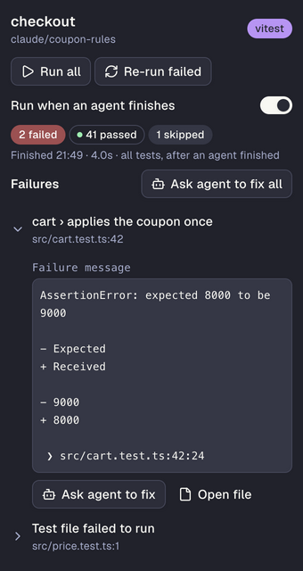
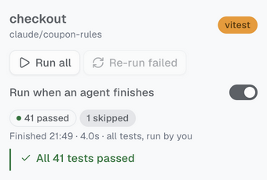
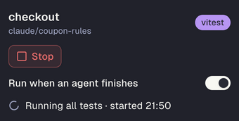
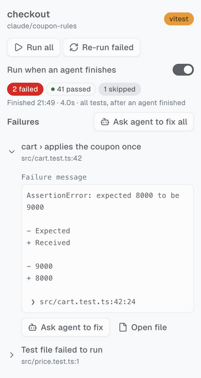
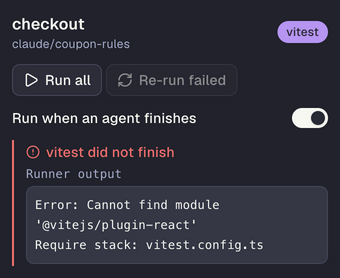

01
Agent finishes
Claude, Codex or any Orca agent ends a turn that changed files in the workspace.
Run a workspace's tests from Orca's sidebar. They re-run when an agent finishes, and every failure is one click away from going back to the agent that caused it.

You stop asking "did it break anything?" after every turn. Test Runner checks for you, and hands the answer straight back.
Claude, Codex or any Orca agent ends a turn that changed files in the workspace.
Vitest or Jest runs on its own in that workspace. Nothing changed? It stays quiet.
A notification, then each failure with its file, line and a clean error in the sidebar.
One click types the failure into the agent with a command to reproduce it. Then the loop runs again.
Detects Vitest or Jest from the workspace's package.json and runs it with a JSON report. Re-run only the files that failed, or stop a run that goes long.


Sent to the workspace's idle agent. Busy or blocked agents are never interrupted. No agent? One is started for you.
Compares git status with the last run, so an agent that only answered a question costs nothing.
Runner and Node frames are trimmed. You see the assertion and the line in your test.
A desktop notification when an automatic run fails, and again when it passes after failing.
Starts the runner from its own package entry, with the node from Homebrew, Volta, mise or asdf.
Every screenshot here is the real panel, rendered by Orca in its light and dark themes.


| Run tests when an agent finishesOnly when files changed since the last run | on |
| Notify after automatic runsOn failure, and when tests pass again | on |
| Agent to startWhen the workspace has no agent to send to | Claude Code |
| Run timeout | 10 min |
SSH and other remote workspaces are not supported yet.
Looks for the runner in the root package.json, so monorepo packages come later.
Both write the same JSON report. Other runners are welcome as contributions.